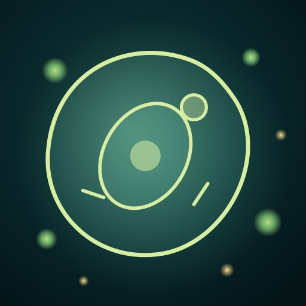

This Privacy Policy describes how MORPHOS ("the game", "we", "us") handles your information. MORPHOS is a browser game developed by JZA Applications, played at jza.app/morphos.html.
In short: MORPHOS runs in your browser and keeps your progress on your own device. There are no accounts, no analytics and no advertising. Playing alone sends nothing about you anywhere. Playing together connects your device directly to your friends' devices, which means sharing your internet address with them and, briefly, with the services that help the connection start.
Playing alone
- Your progress stays on your device. Your saved life, settings, key bindings and records are kept in your browser's local storage. They are never sent to us.
- Version check. The game occasionally re-downloads its own page from jza.app to see whether a newer version exists. Nothing about you or your game is sent with that request.
- Save files. If you choose to save a life to a file, that file is created on your device. What you do with it is up to you.
Co-Op (playing together)
Co-Op connects up to eight players' browsers directly to each other. Game data (where each player and creature is, and what happens to them) travels straight between the players' devices and does not pass through our servers. Starting those connections involves the following.
- The connection helper (coop.jza.app). To connect, two browsers must first swap a block of technical connection details, which includes your device's internet (IP) addresses. When you host or join with a pond code, each browser leaves those details with a small helper service we run on Cloudflare, and the other browser collects them. The helper deletes them as soon as they are collected, or after two minutes if they are not. It stores nothing else: no names, no game data and no history. Like any web service, it necessarily sees the internet address a request comes from, and Cloudflare, which runs it, handles that under Cloudflare's Privacy Policy.
- Address lookup (STUN). To find out how your device can be reached from the internet, your browser asks public address-lookup servers run by Cloudflare and Google. They see your internet address and nothing about the game. They are governed by Cloudflare's and Google's privacy policies.
- The other players. A direct connection means the players you connect to can see your internet address, as with any direct connection between devices. They also receive the name you typed and your play in the shared pond. Only play together with people you are comfortable sharing that with.
- Copy and paste. If you connect by copying an invite and a reply instead of using a pond code, the connection helper is not used. The text you copy contains the same connection details, including your internet addresses, so send it only to the person you mean to play with.
Your co-op pond is saved in your own browser's local storage, like a solo life. The name you type is also kept there so you do not have to type it again.
Data we collect
We do not collect, sell or share your personal data. Specifically, MORPHOS:
- Does not use analytics, advertising or tracking.
- Does not create accounts or ask for an email address or password.
- Does not send your saved game, your name or your play to us.
- Does not keep a record of who played together, or when.
Children's privacy
MORPHOS does not knowingly collect personal information from anyone, including children under 13. Playing together shares an internet address with the other players, so children should only play together with people a parent or guardian has agreed to.
Your control over your data
Everything the game keeps is in your browser. Clearing this site's data in your browser settings removes your saved lives, your co-op pond, your name and your settings. Nothing needs to be deleted on our side, because nothing is kept there.
Changes to this policy
If this policy changes, the updated version will be posted on this page with a new date at the top.
Contact
Questions about this policy or about MORPHOS: jza.applications@gmail.com